7. Camera Model
Pinhole camera, homogeneous coordinates, intrinsic & extrinsic matrices, projection pipeline, camera calibration
1. Pinhole Camera Model
A camera maps the 3D world onto a 2D image. Understanding this mapping mathematically is fundamental to computer vision: it lets us reconstruct 3D structure from images, predict where a 3D point will appear in an image, and calibrate sensors for autonomous systems.
The central question of this module:
Why a Pinhole?
If you place a bare sensor in front of a scene, every point sends light in all directions — every sensor cell receives light from many scene points simultaneously, producing a completely blurred image. A barrier with a tiny aperture (the pinhole) forces each sensor cell to receive light from only one direction, producing a sharp (but inverted) image.
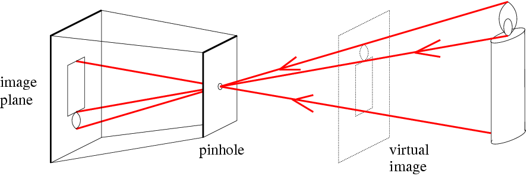
| Component | Description |
|---|---|
| Optical center $C$ | The pinhole — all light rays pass through this point |
| Image plane | Sensor behind the pinhole — receives the inverted image |
| Virtual image plane | Conceptual plane in front of $C$ at distance $f$; gives an upright image and is used for mathematics |
| Focal length $f$ | Distance from optical center to image plane |
| Principal point | Intersection of the principal axis with the image plane |
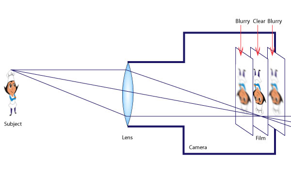
The pinhole principle dates back to antiquity. Mo-Ti (China, 470–390 BC) described the phenomenon. The camera obscura (Latin: dark room) was a room-sized device used by Renaissance artists for tracing scenes. Lens-based versions appeared by 1568.
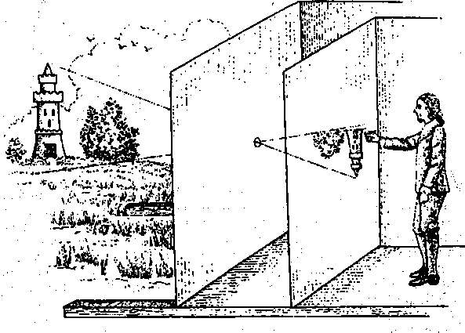
2. Projective Geometry
When we project the 3D world onto a 2D image, information is lost. Knowing what is lost versus what is preserved is crucial for reasoning about camera systems.
What is Lost in Projection
| Property | Why it is Lost |
|---|---|
| Depth / Distance | A small nearby object and a large distant object can produce identical 2D projections |
| Absolute size | Image size depends on distance — a person close appears larger than a person far away |
| Angles | Right angles in 3D do not generally project to right angles in 2D |
| Parallelism | Parallel lines (unless parallel to image plane) converge to a vanishing point |
What is Preserved in Projection
| Property | Explanation |
|---|---|
| Straightness of lines | A straight 3D line projects to a straight 2D line — fundamental to perspective projection |
| Incidence | If a 3D point lies on a 3D line, its projection lies on the projected line |
3. Vanishing Points and Vanishing Lines
A vanishing point is where a set of parallel 3D lines appears to converge in the image. Mathematically, it is the projection of the "point at infinity" along that direction.
- Each set of parallel lines has its own vanishing point.
- Lines parallel to the image plane do not converge — their vanishing point is at infinity in the image.
A vanishing line (horizon line) connects the vanishing points of all parallel lines that lie on the same 3D plane. For the ground plane, the vanishing line is the horizon.
4. Homogeneous Coordinates
Perspective projection is inherently nonlinear (it involves division by depth $Z$). Homogeneous coordinates allow us to express this nonlinear projection as a linear matrix multiplication, which is computationally elegant and forms the basis for all camera matrix operations.
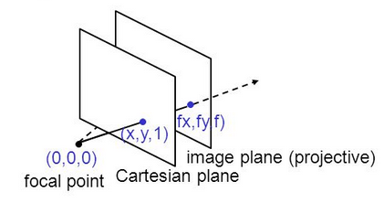
5. Camera Projection Matrix Derivation
Setup and Similar Triangles
Place the camera coordinate system with origin at the optical center $C$, the $z$-axis along the principal axis, and $x$/$y$-axes spanning the image plane. A 3D point in camera coordinates $P = (x_v, y_v, z_v)$ projects onto the virtual image plane at distance $f$ (focal length) by similar triangles:
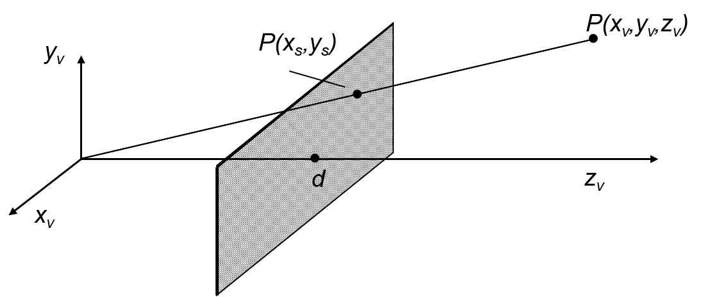
Matrix Form (Simple Projection)
Absorbing the division by $z_v$ into homogeneous-to-Cartesian conversion:
6. Intrinsic Camera Parameters
Intrinsic parameters describe the internal characteristics of the camera — how 3D points in camera coordinates map to 2D pixel coordinates. They are properties of the hardware (sensor, lens) and do not depend on the camera's position in the world.
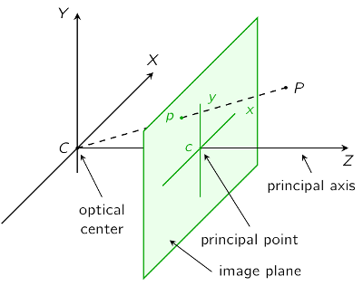
| Parameter | Symbol | Description |
|---|---|---|
| Focal length (horiz.) | $\alpha = f / p_w = f_x$ | Focal length in horizontal pixel units |
| Focal length (vert.) | $\beta = f / p_h = f_y$ | Focal length in vertical pixel units (may differ if pixels are non-square) |
| Principal point | $(u_0, v_0)$ | Where the principal axis hits the image plane (ideally center, often slightly off) |
| Skew | $s$ | Shear between pixel rows and columns; $s \approx 0$ for modern cameras |
Building the Intrinsic Matrix Step by Step
Step 1: Simplest case — square pixels, no skew, principal point at center: $K = \text{diag}(f, f, 1)$
Step 2: Add principal point offset $(u_0, v_0)$ — optical axis not through sensor center.
Step 3: Non-square pixels — separate $\alpha = f/p_w$ and $\beta = f/p_h$.
Step 4: Add skew $s$ — pixel grid not perfectly rectangular.
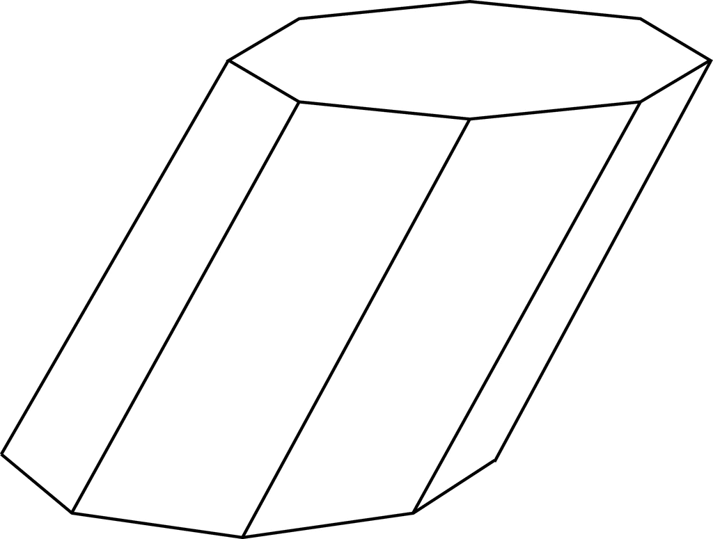
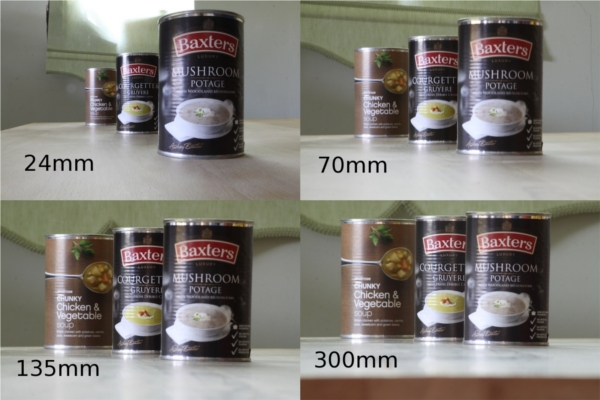
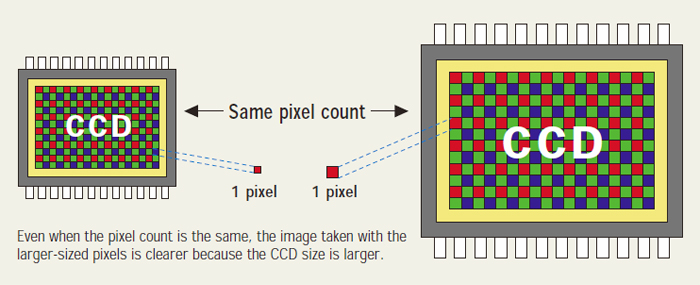
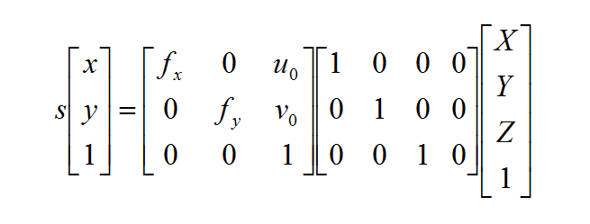
Intrinsic parameters are specific to each camera but can change over time. Recalibration is needed when:
- Physical shock (camera dropped) — can shift the lens relative to the sensor
- Temperature changes (outdoor winter recording) — thermal expansion/contraction shifts camera components
- Lens change — a new focal length changes $f_x$, $f_y$ entirely
Step through 4 levels of complexity in the intrinsic matrix $K$. At each level, adjust the active parameters and see how they affect pixel coordinates and the sensor grid.
7. Extrinsic Camera Parameters
Extrinsic parameters describe the position and orientation of the camera in the world. They transform points from world coordinates to camera coordinates.
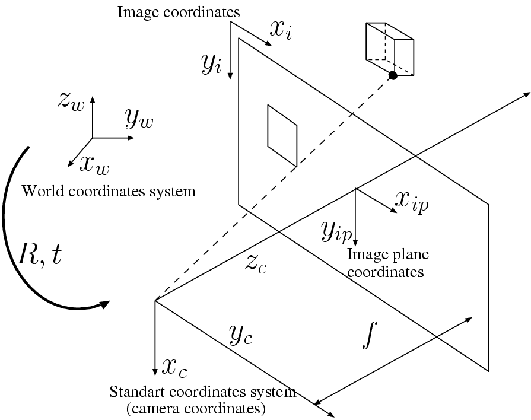
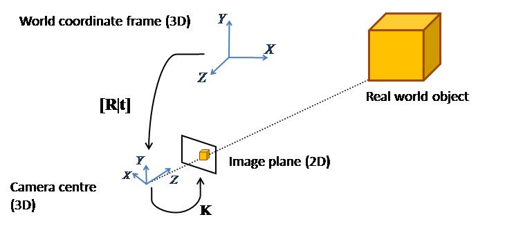
3D Rotation Matrices
The rotation $R$ decomposes into three elementary rotations about coordinate axes (counter-clockwise convention):
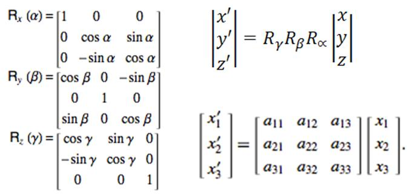
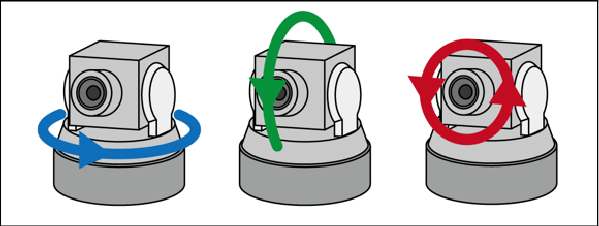
- $R$ is orthogonal: $R^T R = I$, so $R^{-1} = R^T$
- $\det(R) = 1$ (proper rotation, no reflection)
- Although $R$ has 9 entries, only 3 degrees of freedom: the 6 orthogonality constraints from $R^T R = I$ remove 6 free parameters
Rotate a 3D wireframe cube by adjusting pan (yaw), tilt (pitch), and roll angles. Observe the individual and combined rotation matrices update with exact trigonometric values, and verify the orthogonality properties of $R$.
8. The Full Camera Matrix
The complete projection from world coordinates to pixel coordinates chains the extrinsic and intrinsic transformations.
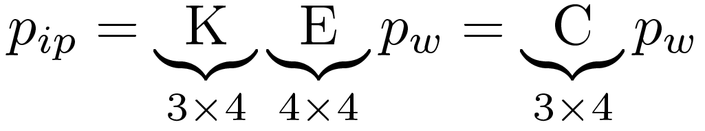
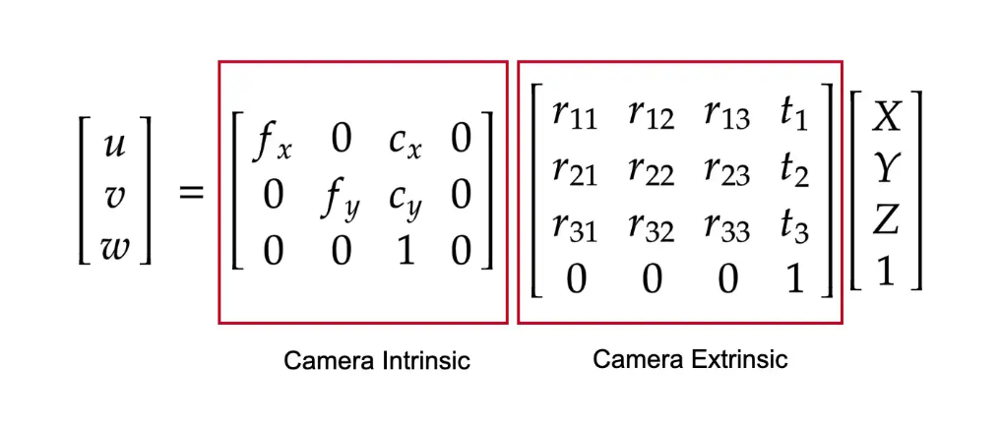
| Matrix | Size | Degrees of Freedom |
|---|---|---|
| Intrinsic $K$ | $3 \times 3$ | 5 ($f_x, f_y, s, u_0, v_0$) |
| Extrinsic $[R | \mathbf{t}]$ | $3 \times 4$ | 6 (3 rotation + 3 translation) |
| Total $C = K[R | \mathbf{t}]$ | $3 \times 4$ | 11 (12 entries minus 1 for scale) |
Adjust a 3D world point, camera intrinsics, and extrinsics. Watch every step of the projection pipeline with fully computed matrices and intermediate values.
9. Camera Calibration
Camera calibration is the process of estimating the 11 independent parameters of $C$ (and by decomposition, the intrinsic $K$ and extrinsic $[R | \mathbf{t}]$).
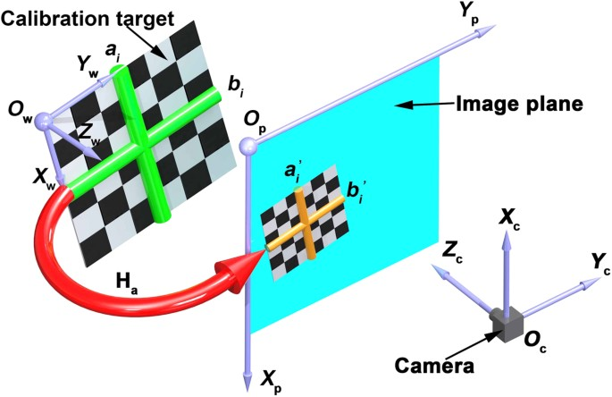
Step 1 — Compute $C$ from Point Correspondences
Each known 3D point $(x_w, y_w, z_w)$ with measured pixel position $(x_{ip}, y_{ip})$ gives two equations:
Rearranging to linear form, these become two rows in the system $A\mathbf{p} = \mathbf{0}$, where $\mathbf{p}$ contains the 12 entries of $C$ (effectively 11 unknowns after scale).
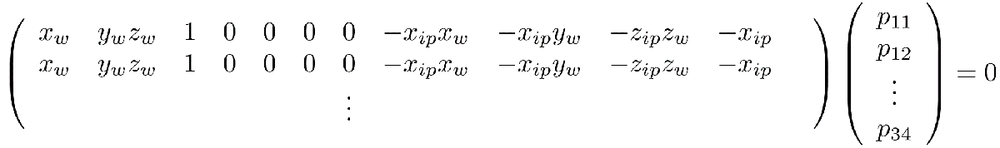
- Each point provides 2 equations
- 6 points give 12 equations for 11 unknowns
- In practice, more points are used to form an overdetermined system, solved via least-squares / SVD for robustness
Step 2 — Decompose $C$ into $K$ and $[R | \mathbf{t}]$
Once $C$ is estimated, RQ decomposition recovers $K$ (upper triangular) and $R$ (orthogonal). The translation is then $\mathbf{t} = K^{-1} \mathbf{c}_4$ where $\mathbf{c}_4$ is the fourth column of $C$.
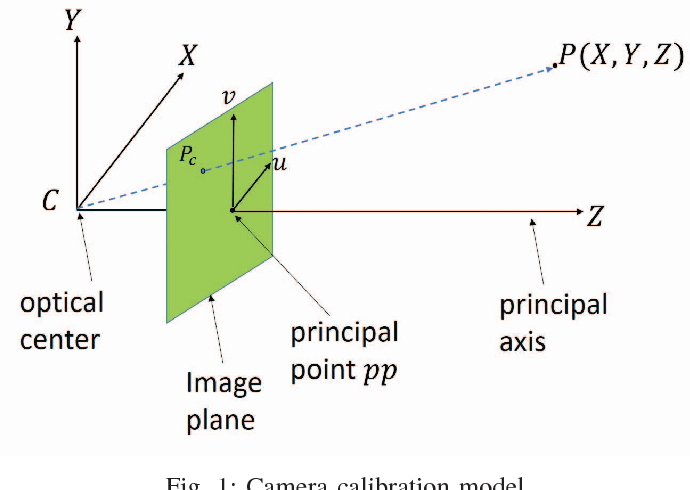
10. Homography
When all scene points lie on a plane (e.g., the ground plane with $Z = 0$), the projection matrix simplifies to a homography — a $3 \times 3$ projective transformation.
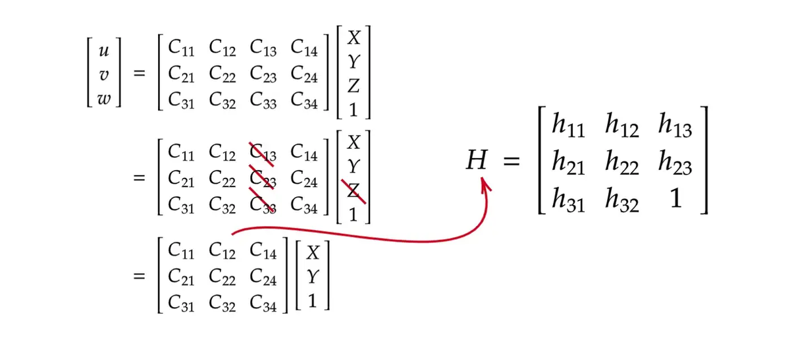
Standard calibration requires a physical checkerboard target. Automated methods use synthetic templates instead:
- Generate synthetic templates by randomly sampling pan, tilt, and roll angles, then applying a homography to create bird's-eye-view templates of an expected scene (e.g., a road intersection).
- Build a dictionary of thousands of templates (>5000 per intersection) covering different viewpoints.
- Match real images to the closest template using a Siamese network combined with a Spatial Transformer Network.
- Recover camera parameters from the best-matching template's homography.
Semantically segmented images (rather than raw RGB) are preferred because they capture scene topology (road layout, lane markings) and are more robust to lighting and weather changes.
See how a flat ground plane ($Z = 0$) is mapped to camera pixels through the homography $H$. Adjust the camera position and observe the 3x3 homography matrix update with the projected quadrilateral.